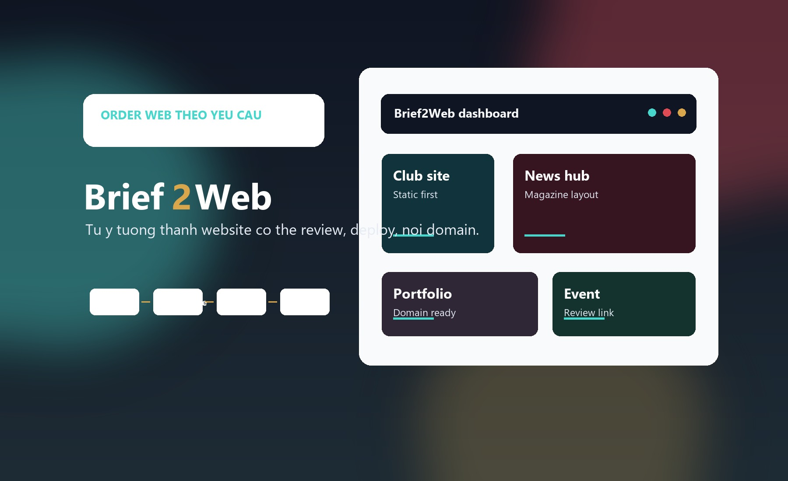

Website CLB, đội nhóm
Giới thiệu, hoạt động, tuyển thành viên, bài viết và liên hệ.

Static web studio
Dự án tổng để quản lý các website tĩnh: mỗi khách hàng hoặc CLB là một nhánh riêng, dễ review, dễ deploy, dễ nối domain sau này.
Ý tưởng repo
`main` giữ trang giới thiệu dịch vụ. Các nhánh như `yvoice-insight-hub` giữ từng bản website riêng để khách xem, góp ý và chốt hướng thiết kế.
Dịch vụ
Giới thiệu, hoạt động, tuyển thành viên, bài viết và liên hệ.
Thông tin chương trình, timeline, CTA đăng ký và bộ nhận diện riêng.
Bố cục magazine, danh mục nội dung, bài nổi bật và tìm kiếm cơ bản.
Profile, dự án, năng lực, liên hệ và giao diện hợp ngành.
Quy trình
Dự án trong repo
Branch
Website tĩnh Y-VOICE | Tiếng nói lý luận trẻ, thiết kế theo logo và bìa CLB.
git switch yvoice-insight-hub
Deploy
Khi cần cho khách xem, có thể deploy branch tương ứng qua GitHub Pages hoặc tạo repo riêng từ branch đã chốt.
git branch
git switch yvoice-insight-hub
git switch main